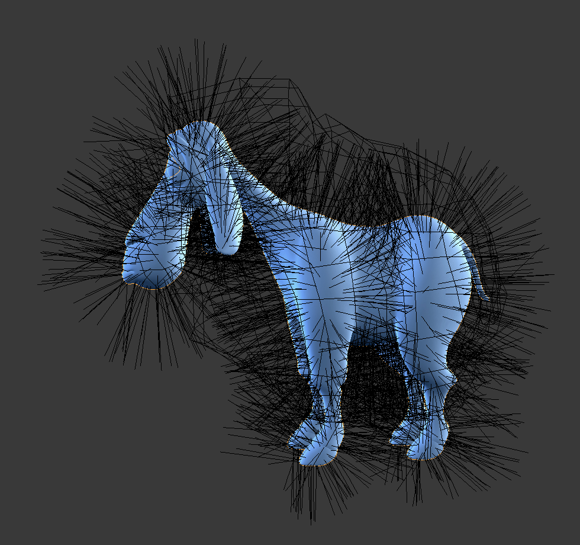

Particle Edit Mode¶
Using Particle Edit Mode you can edit the keyed points (keyframes) and paths of Baked Hair, Particle, Cloth, and Soft Body simulations. (You can also edit and style hair before baking.)
Since working in Particle Edit Mode is pretty easy and very similar to working with vertices in the 3D View, we will show how to set up a particle system and then give a reference of the various functions.
Usage¶
Tip
Only Frames Baked to Memory are Editable!
If you cannot edit the particles, check that you are not baking to a Disk Cache.
Setup for Hair Particles¶
- Create a Hair particle system.
- Give it an initial velocity in the Normal direction.
- Create a simulation.
- Check the Hair Dynamics box.

Editing hair strands in Particle Edit Mode.
Setup for Particle, Cloth, and Soft Body Simulations¶
- Use Emitter particles, or a cloth/soft body simulation.
- Create a simulation by setting up objects and or emitters, set your time range (use a small range if you are just starting out and experimenting), set up the simulation how you want it, using Alt-A to preview it.
Bake the Simulation¶
Once you are happy with the general simulation, bake the simulation from object mode. The simulation must be baked to enable editing.
Edit the Simulation¶
Switch to Particle Edit from the Mode select menu in the header of the 3D View to edit the particle’s paths/Keyframes. You may need to press T from within the 3D View to see the Particle Edit panel. Move to the frame you want to edit and use the various Particle Edit tools to edit your simulation. Work slowly, previewing your changes with Alt-A, and save often so that you can go back to the previous version should something happen, or that you do not like the latest changes you have made.
Tip
To be able to clearly see what you are working on:
- Open the Options panel in the Toolbar.
- Select Point select mode (see below) in the header of the 3D View. This will display key points along the particle path.
Selecting¶
- Single: LMB.
- All: A.
- Linked: Move the mouse over a keypoint and press L.
- Box select: B.
- Root/Tips: .
You may also use the Select Menu.
Tip
Selections
Selections are extremely useful for modifying only the particles that you want. Hover over a particle path and press L to link-select it, hover over the next and press L to add that path to the selection. To remove a path, hold Shift and press L. To Deselect all press A.
The method to select individual points is the same as in edit mode. RMB to select, Shift-RMB to add/remove a point from the selection.
Select Random¶
Randomly selects particles.
- Percent
- Percent of particles to randomly select.
- Random Seed
- Seed value to use for the selection.
- Action
- Select random can be either used to select or deselect particles.
- Type
- Selects either hair or points. Here these terms can be confusing because hair/point does not refer to the particle type but the path/points of the hair/particle.
Select Modes¶
Select Modes.
- Path
- No keypoints are visible, you can select/deselect only all particles.
- Point
- You see all of the keypoints.
- Tip
- You can see and edit (including the brushes) only the tip of the particles, i.e. the last keypoint.
Brush¶
Reference
| Mode: | Particle Edit Mode |
|---|
With the buttons you can select the type of “Comb” utility you want to use.
- None
- No special tool, just edit the keypoints as “normal” vertices.
- Comb
- Moves the keypoints (similar to the Proportional Editing tool).
- Smooth
- Parallels visually adjacent segments.
- Add
Adds new particles.
- Count
- The number of new particles per step.
- Interpolate
- Interpolate the shape of new hairs from existing ones.
- Steps
- Amount of brush steps.
- Keys
- How many keys to make new particles with.
- Length
- Scales the segments, so it makes the hair longer with Grow or shorter with Shrink.
- Puff
Rotates the hair around its first keypoint (root). So it makes the hair stand up with Add or lay down with Sub.
- Puff Volume
- Apply puff to unselected end points, (Helps to maintain the hair volume when puffing the root.)
- Cut
- Scales the segments until the last keypoint reaches the brush.
- Weight
- This is especially useful for soft body animations, because the weight defines the soft body Goal. A keypoint with a weight of 1 will not move at all, a keypoint with a weight of 0 subjects fully to soft body animation. This value is scaled by the Strength Min to Max range of soft body goals…
Common Options¶
Below the brush types, their settings appear:
- Radius F
- Set the radius of the brush.
- Strength Shift-F
- Set the strength of the brush effect (not for Add brush).
- Add/Sub Grow/Shrink
- Sets the brush to add the effect or reverse it.
Options¶
Reference
| Mode: | Particle Edit Mode |
|---|---|
| Panel: |
- Deflect Emitter
Hair particles only – Do not move keypoints through the emitting mesh.
- Distance
- The distance to keep from the Emitter.
- Keep
- Length
- Keep the length of the segments between the keypoints when combing or smoothing the hair. This is done by moving all the other keypoints.
- Root
- Keep first key unmodified, so you cannot transplant hair.
- Correct
- Velocity
- Recalculate velocities of particles according to their edited paths. Otherwise, the original velocities values remains unchanged regardless of the actual distance that the particles moves.
- X Mirror
- Enable mirror editing across the local X axis.
- Shape Object
A mesh object which boundary is used by the Shape Cut tool.
- Shape Cut
- This grooming tool trims hairs to a shape defined by the Shape Object. This is a quicker way of avoiding protruding hair sections from lengthening than using the Cutting tool. It works especially well for characters with extensive fur, where working in a single plane with the Cutting tool becomes tedious.

Before. |

After. |
Viewport Display¶
- Path Steps
- The number of steps used to draw the path; improves the smoothness of the particle path.
- Particles
- Displays the actual particles on top of the paths.
- Fade Time
Fade out paths and keys further away from current time.
- Frames
- How many frames to fade.
- Show Children
- Displays the children of the particles too. This allows to fine-tune the particles and see their effects on the result, but it may slow down your system if you have many children.
Editing¶
Moving Keypoints or Particles¶
- To move selected keypoints press G, or use one of the various other methods to move vertices.
- To move a particle root you have to turn off Keep Root in the Toolbar.
- You can do many of the things like with vertices, including scaling, rotating and removing (complete particles or single keys).
- You may not duplicate or extrude keys or particles, but you can subdivide particles which adds new keypoints .
- Alternatively you can rekey a particle .
How smoothly the hair and particle paths are displayed depends on the Path Steps setting in the Toolbar. Low settings produce blocky interpolation between points, while high settings produce a smooth curve.
Mirror¶
Reference
| Mode: | Particle Edit Mode |
|---|---|
| Menu: |
If you want to create an X axis symmetrical haircut you have to do following steps:
- Select all particles with A.
- Mirror the particles with .
- Turn on X Mirror in .
It may happen that after mirroring two particles occupy nearly the same place. Since this would be a waste of memory and render time, you can use Merge by Distance either from the Specials W or the Particle menu.
Unify Length¶
Reference
| Mode: | Particle Edit Mode |
|---|---|
| Menu: |
This tool is used to make all selected hair uniform length by finding the average length.
Show/Hide¶
Reference
| Mode: | Particle Edit Mode |
|---|---|
| Menu: |
Hiding and unhiding of particles works similar as with vertices in the 3D View. Select one or more keypoints of the particle you want to hide and press H. The particle in fact does not vanish, only the key points.
Hidden particles (i.e. particles whose keypoints are hidden) do not react on the various brushes. But:
If you use Mirror Editing even particles with hidden keypoints may be moved, if their mirrored counterpart is moved.
To unhide all hidden particles press Alt-H.